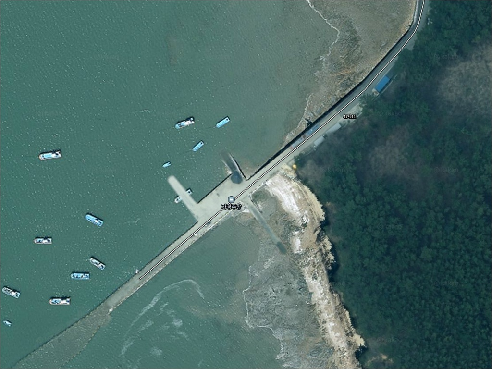
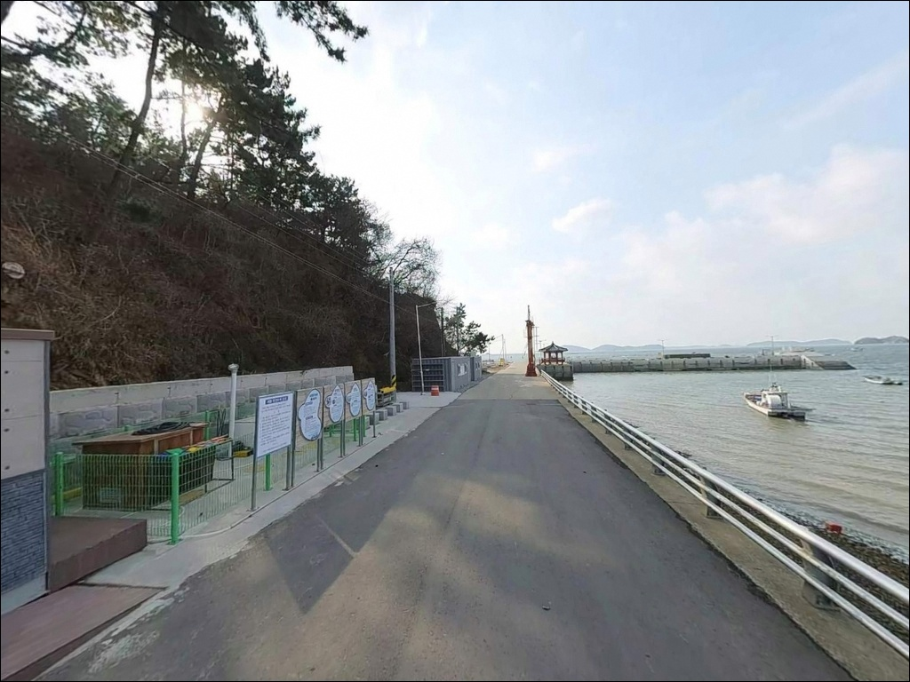
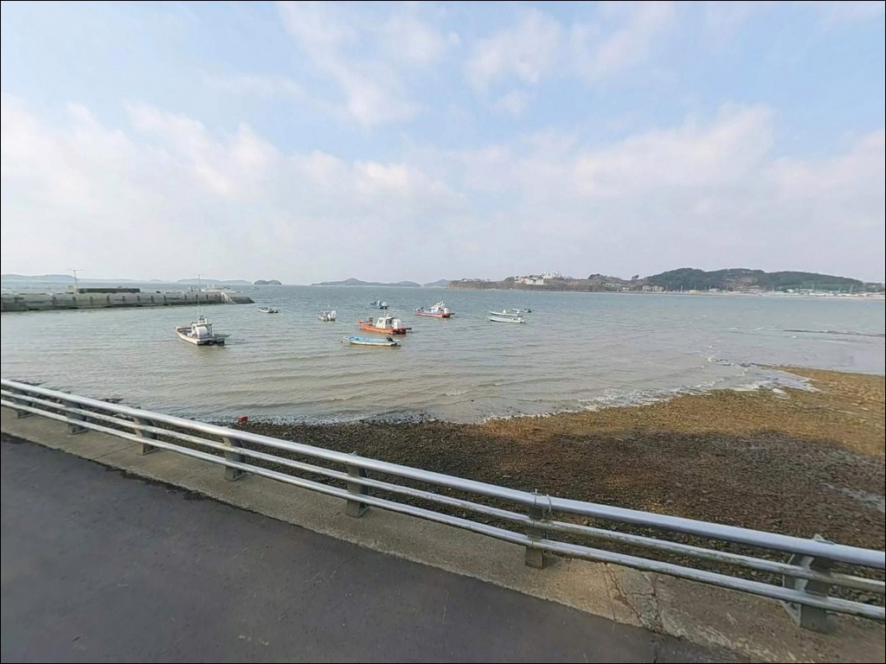
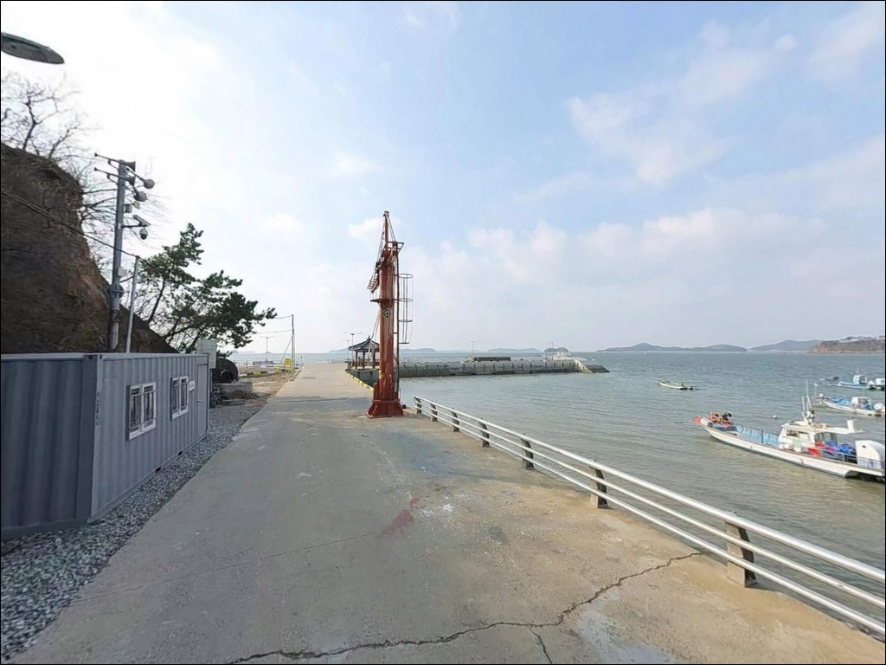
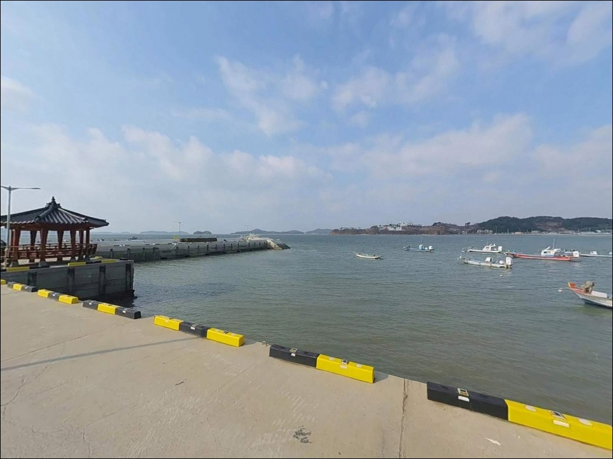
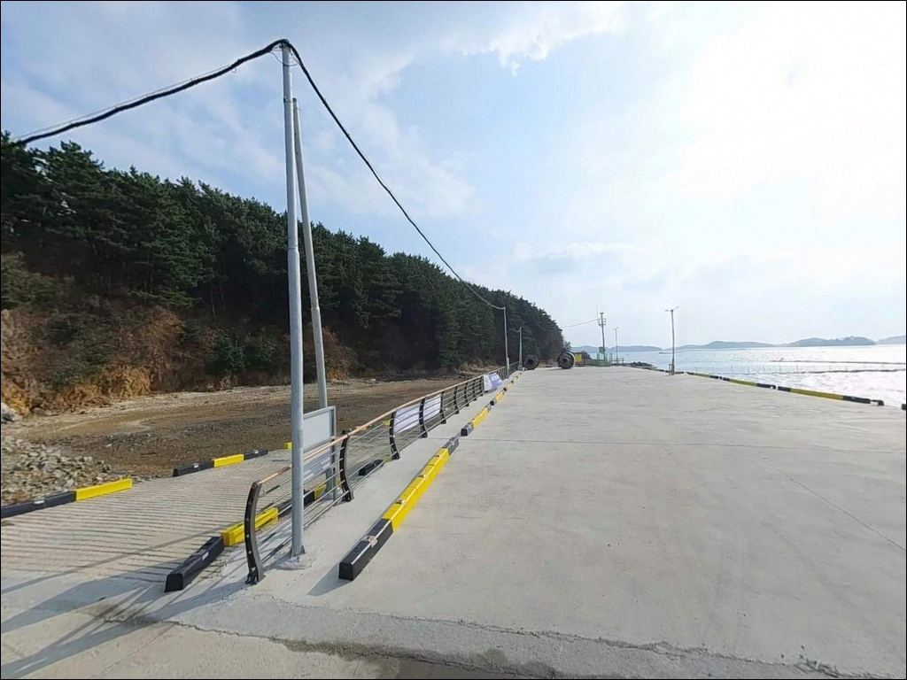
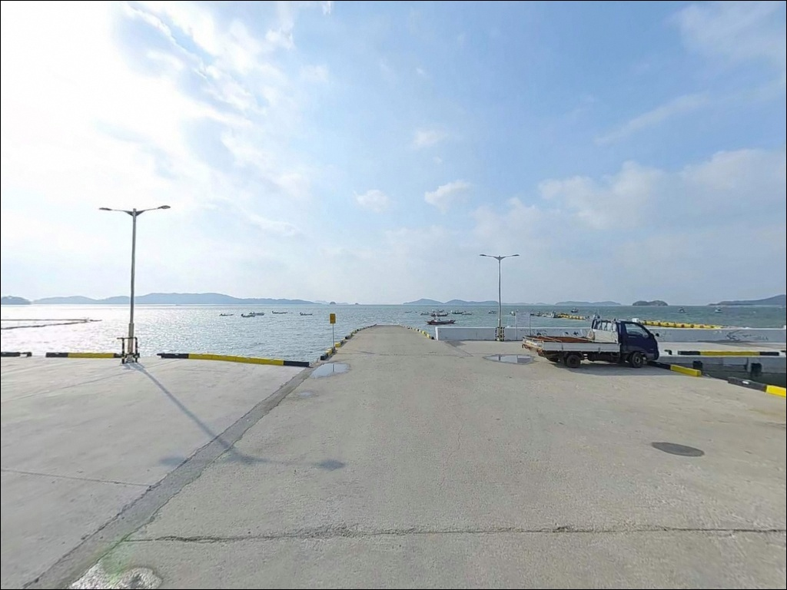
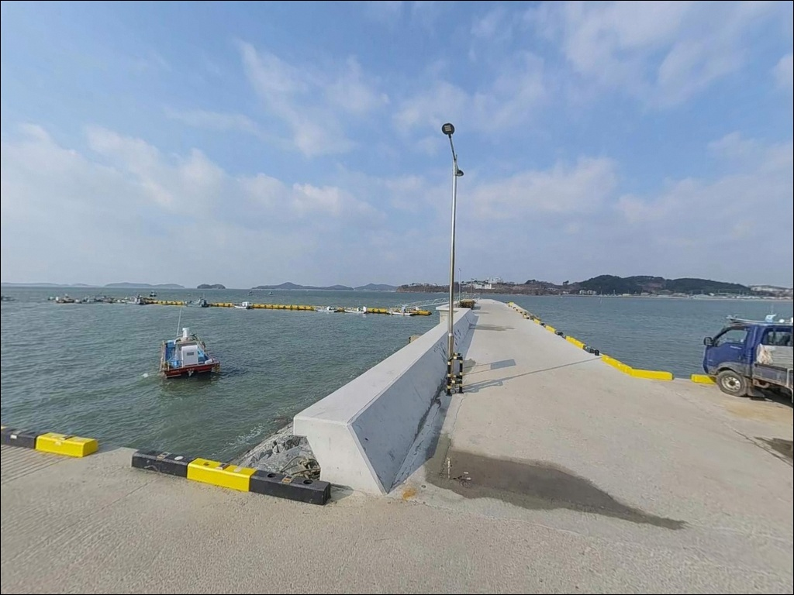
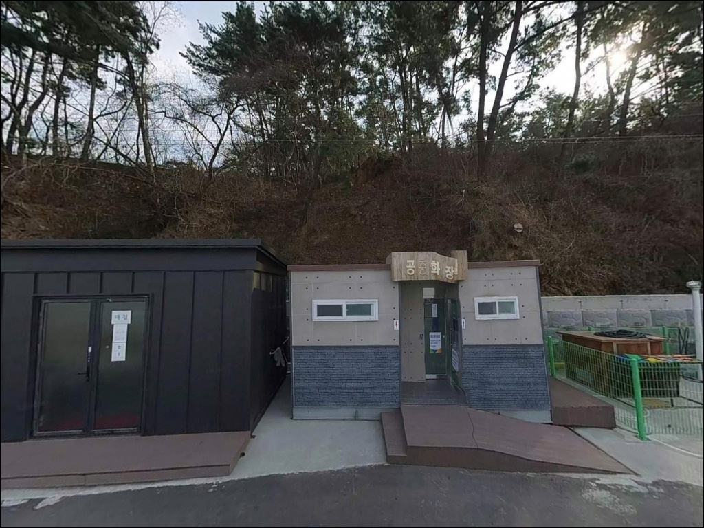

이 페이지에는 광고(제휴 링크 포함)가 있으며, 광고 링크를 통해 구매하면 운영자가 판매 수익 또는 수수료를 받을 수 있습니다. 포인트 사진: 카카오맵 스카이뷰·로드뷰. 이 페이지의 지도·사진 이미지는 카카오맵의 실제 서비스 이미지와 다를 수 있습니다.

가경주항
충남 태안군 고남면 고남리 474-2
가경주항을 방파제 낚시 포인트로만 생각하고 찾아가면,
유어장·체험마을 안내판 앞에서 자유낚시 가능 여부를
확인도 못 한 채 발이 묶이는 상황이 생깁니다.
어촌체험마을이 함께 운영되는 이 항에서는
낚시 자리를 잡기 전에 현장 안내판 확인이 먼저입니다.
안면도 남쪽 끝자락, 고남면에 자리한 가경주항은
방파제 180m 규모의 어촌정주어항입니다.
주꾸미·갑오징어 에깅 포인트로 알려진 고남면 권역에 속해 있으며,
가을 시즌을 중심으로 낚시꾼이 찾는 서해 소형항입니다.
이 글은 가경주항의 진입 여건, 지형 기반 낚시 분석,
물때 판단 기준, 주변 인프라에 집중합니다.
조황 단정이나 특정 어종 보장은
이 글의 범위에 포함되지 않습니다.

가경주항 진입은 고남면 도로망에서
가경주길을 통해 이어지는 포장도로 구조입니다.
급경사나 비포장 구간은 크게 없는 편이며,
소형·중형 차량 기준으로는 진입 자체에 큰 어려움이 없는 수준입니다.
다만 마을 안쪽을 지나는 구간에서 도로 폭이 좁아질 수 있어,
대형 차량이라면 출발 전 위성지도로 진입로를 미리 확인하는 편이 안전합니다.
어촌정주어항으로 정비된 구조라
항 인근에 어느 정도의 평지 공간이 있을 것으로 보입니다.
다만 어민 작업 동선과 겹치는 구간이 있을 수 있어
주차 후에는 작업 선박 이동 여부를 확인하는 것이 기본 매너입니다.
회차 공간은 소형 차량 기준으로 확보 가능한 수준이며,
대형 차량은 갓길 여건도 함께 살펴두는 것이 좋습니다.

가경주항은 한국어촌어항공단이 관리하는 국가어항 구역이라,
야간 차박·취사에 대해 이용 제한이 있을 가능성이 있습니다.
도착 즉시 현장 안내판의 이용 규칙을 확인하는 것이
불필요한 제재를 피하는 가장 확실한 방법입니다.
주변에 펜션과 체험 시설이 밀집해 있어
야간 조명은 어느 정도 갖춰진 환경으로 보이지만,
관광객과 체험객이 함께 이용하는 구역 특성상
프라이버시 확보는 제한적인 편입니다.
항 남측 원산도 방향 모래톱은
야간 출입통제구역으로 공식 지정된 구역이므로,
일몰 30분 후부터 일출 30분 전까지 도보 진입이 금지됩니다.
해당 모래톱은 밀물 시 빠르게 수몰되는 저수심 지형으로,
낮에도 물때 없이 진입하면 위험할 수 있습니다.
차박을 메인으로 계획한다면
남쪽 영목항 인근이나 별도 지정된 차박지를
출발 전에 탐색해 두는 편이 현실적입니다.

가경주항 인근 고남리에는 이마트24가 위치해 있으며,
운영시간은 매일 오전 7시부터 오후 10시 30분입니다.
낚시 소품, 식음료, 간단한 용품 구입이 가능한 수준이며,
CU 편의점도 고남리 내에 위치해 있습니다.
고남리 오일뱅크 주유소는
안면도 진입 전 마지막 주유 구간에 해당하는 곳으로 알려진 곳입니다.
출발 전 연료를 채우지 못했다면 이 주유소에서 반드시 확인해야 합니다.
구매항낚시(고남리 소재)는 사전 전화 확인을 거쳐
채비와 낚시 소품 구입이 가능한 여건입니다.
가경주항 내에는 공중화장실이 설치되어 있습니다.
응급 상황 발생 시 태안읍 방향 병원까지
차로 30분 이상 소요되는 거리입니다.
비상약품과 수분은 출발 전 반드시 챙겨두는 편이 좋습니다.

가경주항 방문 전 가장 먼저 확인할 것은 물때입니다.
서해안은 조차가 커 간조 시 수심이 급격히 낮아지는 구간이 많습니다.
바다타임에서 고남면 기준 물때를 확인한 뒤
들물 전후 2~3물 타이밍을 입장 시각으로 맞추는 것이
기본 전략입니다.
가경주항이 어촌체험마을·유어장과 인접한 구역이라는 점을
출발 전에 인지하고 가는 것이 중요합니다.
항 내 일부 구간에는 유어장·양식장 관련 안내판이
설치되어 있을 가능성이 있어,
도착 후 안내판을 먼저 확인하고 낚시 자리를 선정하는 순서가
헛걸음을 막는 방법입니다.
방파제 석축 구조를 감안하면 채비 손실이 발생할 수 있으므로
여분 채비는 넉넉히 준비하는 편이 좋습니다.
야간 낚시를 계획한다면 헤드랜턴과 구명조끼는 필수이며,
기상청 예보는 당일 아침 한 번 더 확인하는 것이 기본 대비입니다.
출조 전 최신 조황은 "가경주항 낚시", "고남 방파제 조황"으로
검색해 확인하시기 바랍니다.

가경주항은 방파제 180m, 물양장 100m,
어항구역 수역 약 83,000m² 규모의 서해 소형항입니다.
내항은 선박 정박과 어민 작업 중심이고,
외항 방향으로 나갈수록 수심이 점진적으로 깊어지는
구조일 가능성이 높습니다.
방파제 끝단과 꺾이는 구간에서 수심 변화가 생기고
조류 흐름이 만들어지는 지형으로 볼 수 있습니다.
서해안의 조차가 큰 특성상 간조 시에는
항 주변 수심이 상당히 낮아지는 구간이 생깁니다.
원투낚시나 루어 모두 들물 타이밍에 집중하는 것이
이 포인트에서 수심을 확보하는 기본 방법입니다.
가경주항 방파제 외항 끝단은 서해 조류 흐름을 직접 받아
들물 타이밍에 입질 가능성이 높아지는 자리입니다.
방파제 석축과 테트라포드 구조가 있을 가능성이 있어
밑걸림에 주의해야 하는 지형입니다.
원투 채비는 봉돌 무게를 흐름에 맞게 조정하는 것이
채비 손실을 줄이는 방법이며,
석축 위 이동은 야간에 특히 최소화하는 편이 안전합니다.
출조 전 최신 조황은 반드시 검색해 보시기 바랍니다.

이 포인트에서 가장 많이 언급되는 낚시 스타일은
주꾸미·갑오징어 에깅입니다.
고남면 권역은 가을 시즌 선상 에깅의 거점으로 알려진 해역이며,
방파제에서도 같은 방식으로 접근해볼 수 있는 지형 조건입니다.
9월에서 11월 가을 시즌이 중심 타이밍이며,
들물이 살아나는 시간대를 기준으로
외항 방향으로 캐스팅 구간을 잡는 것이 유리합니다.
원투낚시도 이 포인트 지형에 어울리는 스타일입니다.
서해 소형항 특성상 야간 원투에서 붕장어 입질을 기대해볼 수 있으며,
들물 전후로 수심이 확보되는 타이밍에
외항 방향으로 채비를 멀리 보내는 방식이 맞습니다.
정조 전후에는 채비를 바닥층에 안정적으로 세울 수 있어
원투낚시 운용이 수월해지는 편입니다.
루어낚시도 병행해볼 만한 환경입니다.
방파제 석축이나 외항 측 라인을 소형 지그헤드 채비로
천천히 탐색하면 우럭이나 노래미 입질을
기대해볼 수 있는 지형 조건입니다.
야간에는 석축 주변을 중심으로
짧은 구간씩 천천히 탐색하는 방식이
안전하고 효율적입니다.

가경주항에서 낚시 여건이 여의치 않거나
자유낚시 구간이 제한적으로 느껴진다면,
남쪽 약 2.5km 거리의 영목항이 가장 현실적인 대안입니다.
영목항은 고남면 권역의 주요 선상 출항지로,
식당가와 낚시 인프라가 갖춰진 규모 있는 항구입니다.
좌대낚시나 방파제 낚시를 원한다면
고남리 내에 위치한 구매항을 탐색해볼 수 있습니다.
출조 전 구매항낚시(041-673-0110)로
현황을 먼저 확인하는 편이 효율적입니다.
원산안면대교를 이용하면 보령 원산도 방면으로도
이동이 가능하며, 탄개포항도 방파제 낚시 후보로
함께 고려해볼 수 있습니다.

주꾸미·갑오징어 에깅이나 야간 원투낚시를 즐기는 낚시꾼이라면
가경주항의 지형 조건 자체는 시도해볼 만합니다.
방파제 외항 방향과 들물 타이밍이 맞아 떨어지는 날이라면
서해 소형항 특유의 조용한 분위기 속에서
낚시를 즐길 수 있는 환경입니다.
다만 어촌체험마을과 유어장이 함께 운영되는 곳이라
자유낚시 가능 구간을 현장에서 먼저 확인하지 않으면
낚시 자체가 어려워질 수 있습니다.
야간 모래톱 출입통제구역을 모르고 진입하면
과태료 부과 대상이 됩니다.
현장 안내판 확인, 물때 계산, 자급 준비,
이 세 가지를 갖추고 가는 것이
가경주항 방문의 기본 전제 조건입니다.
고남면 주변 인프라를 활용하면 식수와 채비 보충은 어렵지 않고,
가을 에깅 시즌에 차박과 낚시를 함께 묶어
안면도 남단 해안을 돌아보는 동선으로 계획한다면
가경주항은 그 출발점으로 삼아볼 만한 포인트입니다.